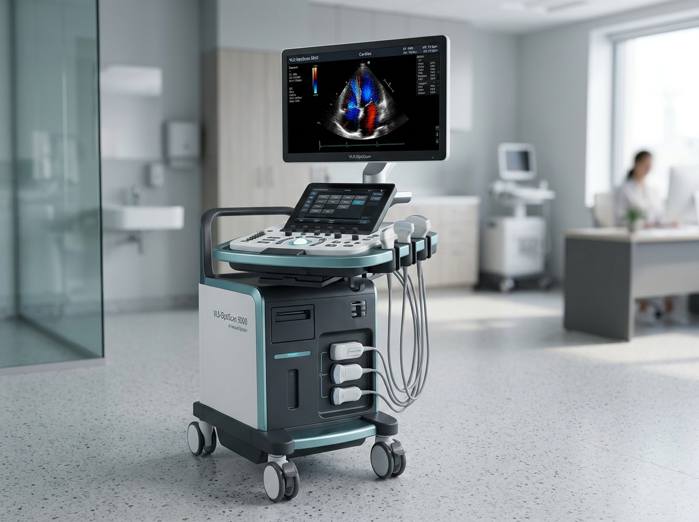

VLS-OptiScan 5000
High-Definition Multi-Frequency Diagnostic Ultrasound SystemA premium diagnostic imaging workstation designed for cardiology, abdominal radiology, and vascular diagnostics. Incorporating 256-channel digital acoustic beamforming, single-crystal wideband probe architecture, and real-time color Doppler hemodynamics, the OptiScan 5000 delivers crystalline micro-vascular visualization and seamless DICOM 3.0 enterprise PACS connectivity.
Clinical Target
Cardiology, Radiology & Vascular Diagnostics
Device Classification
FDA Class II · CE Marked Medical Device
Sourcing Status
Commercial Hospital Deployment
Validation Scope
Multi-Center Clinical Evaluation Completed